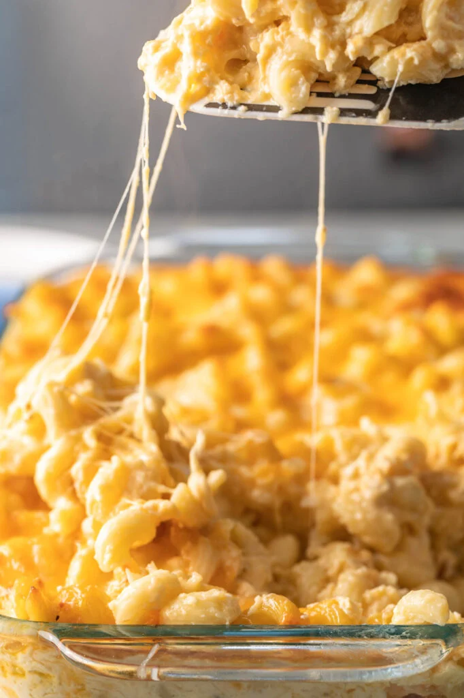

MacNCheese

Mac and cheese is a pasta dish. It is made with milk, butter, cheese and your favorite pasta. Many people Enjoy
this dish in the evening if they are in the mood for a cheese dish. Also, it goes well with any proteins if one choice.
Ingredients
- Kraft's MacNCheese
- Milk
- Butter
- Parmesan Cheese
Steps:
- Step 1:Boil water inside a medium size pot.
- Step 2:Pour the box of mac and cheese into the pot.
- Step 3:Drain the hot water from the pot. Use a drainer, not a lid.(Don't be lazy)
- Step 4:Milk butter, milk and cheese with the pasta while it is still hot. Ouch!
- Step 5:Pour into your favorite bowl when one is ready to FEAST!